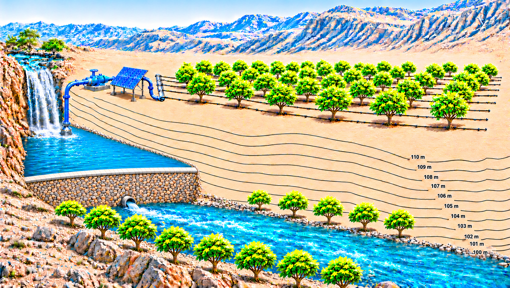
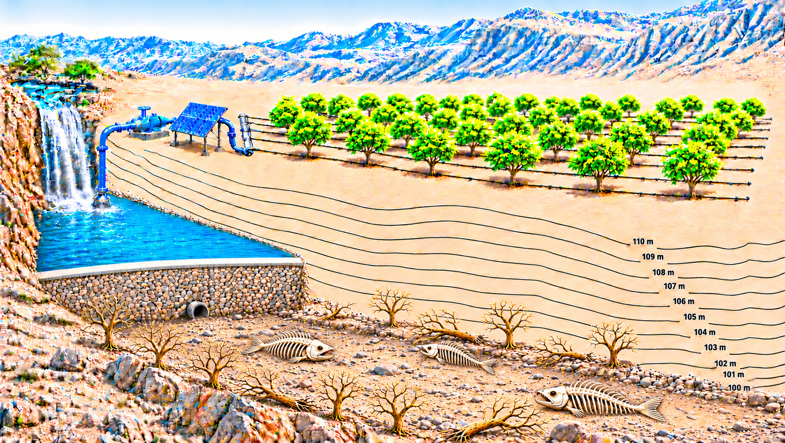
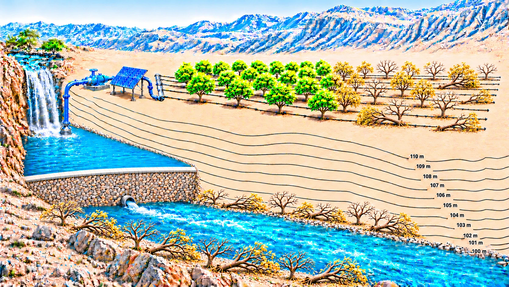

Уед-Уарзазат — сезонна річка на півдні Марокко, поблизу міста Уарзазат; вона належить до басейну річки Драа. У навчальній моделі притік задано з коефіцієнтом масштабування 1:500 — це розрахунковий прототип, а не точне відтворення фактичного водного режиму річки.



Річне моделювання росту саду
Натисніть «Підготовка симуляції», щоб отримати завдання
?Це довжина затопленої ділянки русла від водоспаду до греблі. За незмінного поперечного перерізу місткість чаші зростає прямо пропорційно цій довжині.600 м
0 м2 000 м
Вартість довжини: 0 кредитів · 1 кредит/м.
?У спрощеній моделі висота греблі дорівнює радіусу півкруглого поперечного перерізу чаші. Об’єм зростає пропорційно квадрату висоти.7 м
0 м10 м
Вартість висоти: 0 кредитів · 100 кредитів/м.
?Це об’єм води, який щомісяця залишається в річці нижче греблі. Учень може обрати й 0 м³/міс.; за нульового скиду вода нижче греблі не підтримується.0 м³/міс.
0 м³48 000 м³
Вибирайте ціле число; стрілки ←/→ змінюють скид на 1 м³/міс. Дробова частина відкидається. Відхилення скиду до 1 000 м³/міс. не знижує оцінку. Перелив наведено в балансі води для довідки; він не впливає на оцінку.
?Скористайтеся формулою з методики розрахунку: за витратою та допустимою швидкістю потоку визначте площу перерізу, а потім внутрішній діаметр труби.1 мм
0 ммМежа шкали: — мм
Вартість на 100 м: 0 кредитів (5 кредитів/мм).
Насос та енергіяРежим залежить від ємності акумулятора
День і ніч тривають по 12 годин. З акумулятором насос може працювати вночі; фактична тривалість залежить від доступної енергії панелей і ємності акумулятора.
?Без акумулятора насос працює умовні 12 годин удень; з акумулятором може працювати також уночі. Максимум 4,8 кВт — удвічі більше за розрахункову потребу саду площею 10 га з найбільшим водоспоживанням.4,8 кВт
0 кВт4,8 кВт
Вартість: 0 кредитів · 100 кредитів/кВт.
?Потужність панелей вимірюється у кВт. Верхня межа приблизно у 2,3 раза перевищує максимальну потужність насоса; рекомендована потужність панелей — 2× потужності насоса.9,6 кВт
0 кВт11,1 кВт
Вартість потужності: 0 кредитів · 100 кредитів/кВт.
?Ємність вимірюється у кВт·год. Верхня межа дорівнює 15 годинам роботи насоса на максимальній потужності; рекомендована ємність — 12× потужності насоса.0 кВт·год
0 кВт·год72 кВт·год
Вартість ємності: 0 кредитів · 10 кредитів/кВт·год.